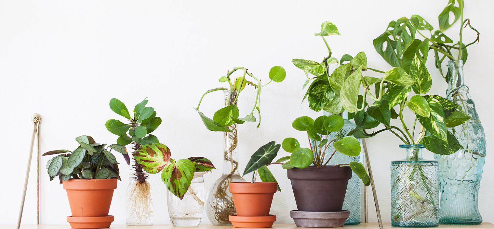
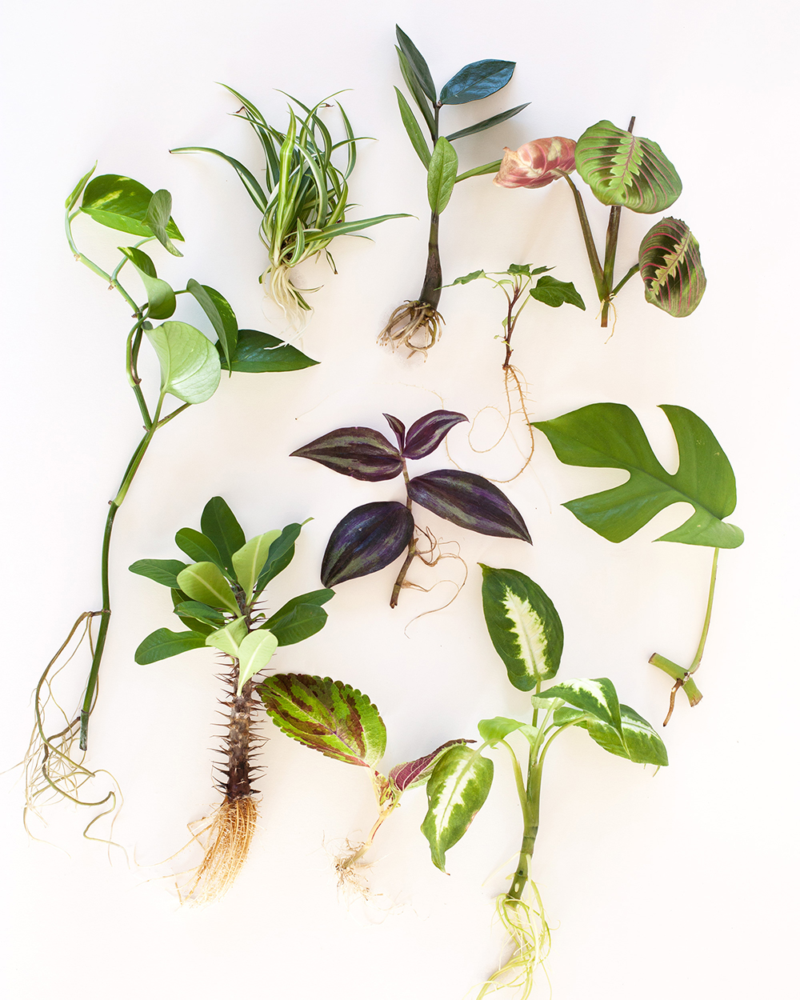
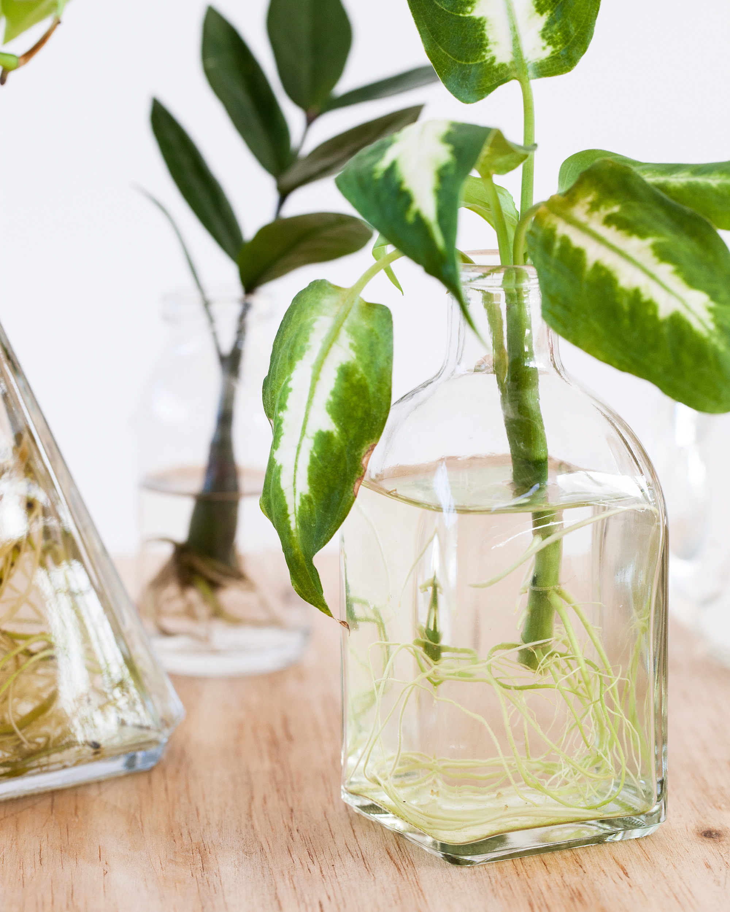

Wat is er nou leuker dan je eigen plantenfamilie op laten groeien?
Kleine plantjes waarvan je de wortels ziet ontwikkelen en nieuwe bladeren ziet groeien. De stekjes krijgen hun eigen karakter, helemaal aangepast aan jouw huis. Stekken is de ultieme manier om je planten familie uit te breiden en in dit blog zal ik je er wat meer over vertellen Het bekendste plantje om te stekken is misschien wel de Pannenkoekplant, of Pilea peperomioides. Die groeit zijn eigen stekjes die je makkelijk van de moederplant af kunt halen. Maar wist je dat je de meeste planten thuis kunt stekken, zonder dat je daar ingewikkelde dingen voor hoeft te doen of hoeft aan te schaffen? Met een schaar, wat glaasjes met water, potjes met grond en wat geduld kom je al een heel eind!

De basiselementen
De beste tijd van het jaar om je planten te stekken is in het voorjaar. Er is voldoende licht en warmte voor je stekjes om goed te wortelen en te groeien. Gebruik altijd schoon materiaal als je je planten stekt. Dus maak je mes of schaar schoon met een beetje alcohol. Zo voorkom je dat je per ongeluk bacteriën van de ene plant verplaatst naar de andere. Maak het liefst ook de potjes nog even schoon voordat je er aarde in stopt. Stek het liefst planten die gezond en sterk zijn, je stekjes zullen dan ook makkelijker groeien. Kies voor de stevige delen van een plant, en niet de hele jonge groei die nog verder moet ontwikkelen. Zorg ervoor dat je je stekken niet te groot maakt. Je stekje heeft nog geen wortels om voldoende water op te nemen en al het blad te voorzien van vocht. Een beetje afhankelijk van de grootte van de moederplant, is het ideale stekje ongeveer 10 tot 15 centimeter lang. Haal altijd wat van de onderste bladeren van je stek af, dat is het stammetje wat straks in de grond of onder het water gaat. Als laatste basiselement heb je een dosis geduld nodig. Sommige stekjes wortelen binnen enkele weken, maar andere kunnen daar maanden over doen. Zolang je stekje er nog gezond uit ziet, en niet verdroogd of verlept is, dan is het druk bezig wortels te ontwikkelen.
